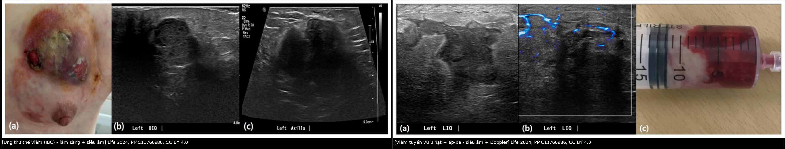
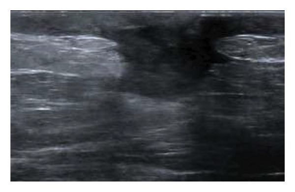
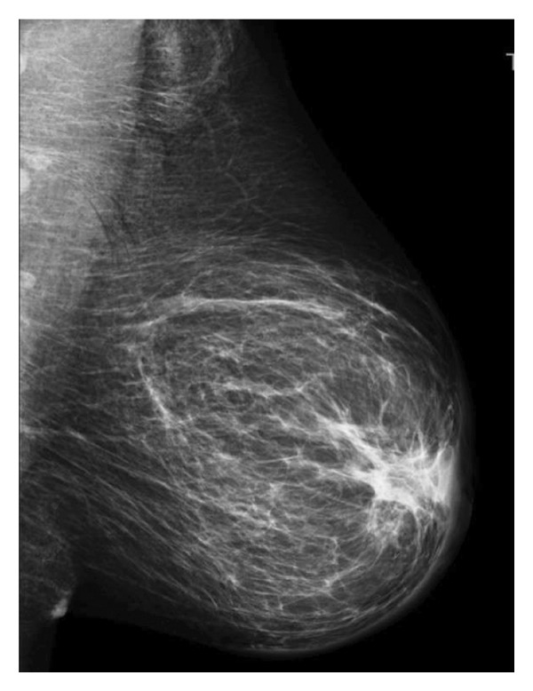
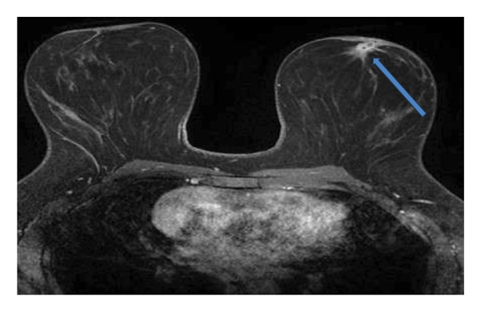
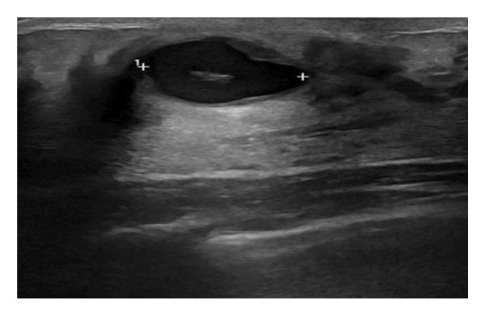
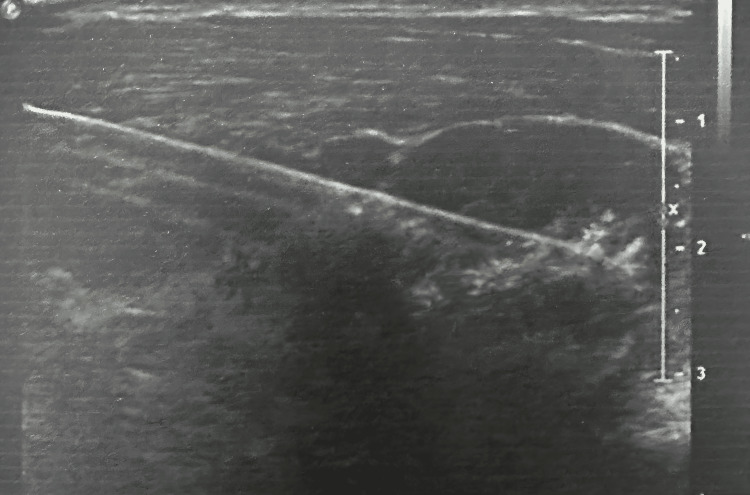
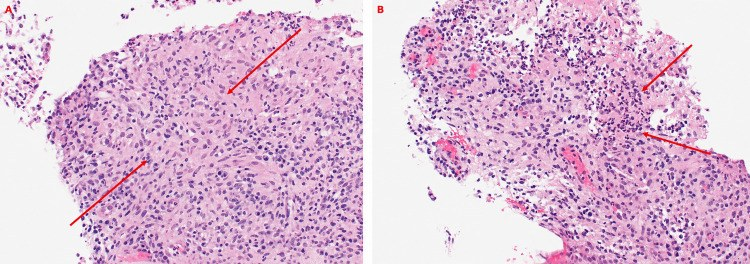

1613 — Viêm tuyến vú u hạt & áp-xe vú: phân biệt ung thư thể viêm / Granulomatous mastitis and breast abscess vs inflammatory breast cancer
Tags: pattern:viem-tuyen-vu pattern:ap-xe pattern:day-da pattern:khoi-vu vung:vu score:BI-RADS protocol:sinh-thiet-loi protocol:MRI-vu
Mức chắc chắn (certainty): tổng hợp y văn (literature synthesis) — review toàn diện IGM (Eur J Breast Health 2026, PMC13011148, CC BY-NC-ND — chỉ trích số), loạt 68 ca GM/TB tuyến vú (Turk J Med Sci 2023, PMC10387850), atlas "bệnh vú viêm" có hình ảnh (Radiol Res Pract 2026, PMC13425464, CC BY 4.0), nghiên cứu phân biệt IBC – viêm vú ở nữ châu Á (Life 2024, PMC11766986, CC BY 4.0), thử nghiệm hút/dẫn lưu áp-xe (Cureus 2026, PMC12973116, CC BY 4.0), ca IGM có mô học (Cureus 2026, PMC13401810, CC BY 4.0). Số liệu lấy nguyên từ bài gốc; chỗ chưa kiểm chứng ghi rõ.
Câu hỏi gốc của bài: nữ đến khám với vú đỏ, đau, dày da, có khối — khi nào là áp-xe/viêm lành tính, khi nào là ung thư thể viêm (inflammatory breast cancer, IBC)? Sinh thiết cái gì, gửi xét nghiệm gì, và vì sao không được cho corticoid trước khi loại lao?
1. Tổng quan bệnh học – cơ chế hình ảnh (TẠI SAO ảnh trông như vậy)
- Ba bệnh cảnh nằm chung một mẫu hình "vú viêm":
- Viêm tuyến vú u hạt vô căn (idiopathic granulomatous mastitis, IGM): viêm hạt quanh tiểu thùy (lobulocentric), không hoại tử bã, thường kèm vi áp-xe trong tiểu thùy. Cơ chế được ủng hộ nhiều nhất là phản ứng với vi khuẩn ưa lipid — Corynebacterium kroppenstedtii cấy dương 54,8% (34/62) trong một loạt (PMC13011148).
- Áp-xe vú (breast abscess): ổ mủ khu trú trong nhu mô, thường sau viêm tuyến vú do Staphylococcus aureus ở người cho con bú, hoặc áp-xe trong IGM.
- Ung thư thể viêm (IBC): tế bào ung thư bít kín bạch mạch ở trung bì (dermal lymphatic emboli) → phù bạch mạch → dày da + da cam, không nhất thiết có khối rõ.
- Tần suất – ngưỡng định lượng bắt buộc:
- IGM chiếm 0,44–1,6% các mẫu sinh thiết vú (PMC13011148); tuổi trung bình 35 trong loạt 68 ca (PMC10387850).
- IBC chiếm 2–4% ung thư vú mới mắc nhưng gây 7–10% tử vong do ung thư vú; trong nhóm phụ nữ có vú viêm, IBC chiếm 5–50% tùy loạt (PMC11766986) → không được mặc định "viêm" là lành.
- Trong loạt 101 phụ nữ châu Á có triệu chứng viêm vú: 13,9% (14/101) là IBC; IBC lớn tuổi hơn (46,4 vs 38,4, p = 0,020), mãn kinh 57,1% vs 12,6%, thời gian triệu chứng 37,7 vs 12,7 ngày (p = 0,002), sưng toàn vú 21,4% vs 1,1% (p = 0,001) (PMC11766986).
- Yếu tố dự báo IBC độc lập: thời gian triệu chứng aOR 1,07 mỗi ngày (p = 0,014); sưng vú aOR 15,24 (p = 0,016) (PMC11766986).
- TẠI SAO hình ảnh trông như vậy (vật lý + mô bệnh):
- Dày da: da bình thường ≤ 2 mm (ngưỡng thực hành phổ biến; bài gốc không nêu số); khi có phù bạch mạch (viêm hoặc ung thư bít bạch mạch), nước tự do trong trung bì làm da dày > 2–3 mm và tăng hồi âm lớp dưới da; cùng một hình ảnh, hai cơ chế hoàn toàn khác nhau → da dày không phân biệt được lành/ác.
- Khối giảm hồi âm bờ không rõ: phù + thâm nhiễm tế bào viêm (hoặc tế bào u) làm mất siêu cấu trúc mô mỡ–tuyến → giảm hồi âm, bóng lưng không đều. Trong IGM, > 80% khối trên siêu âm là hỗn hợp, giảm hồi âm (PMC13011148).
- Ổ dịch (áp-xe): mủ là dịch nhớt giàu tế bào → T1 thấp, T2 cao, DWI hạn chế mạnh (ADC thấp), không ngấm trung tâm, viền ngấm dày (mô hạt viêm). Vì vậy "vòng ngấm + lõi không ngấm" không đồng nghĩa áp-xe lành — ung thư hoại tử cũng cho hình ảnh này.
- Ngấm không tạo khối (non-mass enhancement, NME): viêm quanh ống/tiểu thùy làm tăng tính thấm mao mạch → ngấm dọc ống tuyến, không thành khối. MRI: NME 77% (28/36) và dạng khối 66% (24/36) có thể cùng tồn tại (PMC13011148); 25% ca IGM có đường cong động học giống ung thư → động học không loại trừ IGM.
- Xơ hóa sau viêm: collagen tăng → T2 giảm tín hiệu, ngấm chậm kéo dài; mô xơ co kéo gây rút núm, biến dạng giống ung thư.
- Vì sao IGM hay bị điều trị sai: biểu hiện đỏ, đau, sốt, dày da giống viêm nhiễm; kháng sinh đơn thuần chỉ hiệu quả 3% (PMC13011148) nhưng vẫn được dùng lặp lại nhiều đợt, làm chậm chẩn đoán và tăng nguy cơ mổ cắt tuyến oan.
2. Mẫu hình (pattern) + chẩn đoán phân biệt theo bối cảnh (gamut)
- Khuôn 1 — Dày da lan tỏa ≥ 1/3 vú + phù nhu mô, KHÔNG có khối rõ. Gamut: IBC vs viêm tuyến vú cấp vs IGM lan tỏa vs lao tuyến vú vs viêm mô tế bào thành ngực. Chốt: tuổi > 40 + đã mãn kinh + triệu chứng > 4 tuần + sưng toàn vú → sinh thiết da (punch) + lõi khối, không chờ kháng sinh.
- Khuôn 2 — Khối giảm hồi âm sau núm, bờ không rõ, dính ống tuyến, có thể rút núm. Gamut: IGM vs viêm quanh ống tuyến (periductal mastitis/Zuska) vs ung thư ống tuyến trung tâm vs bệnh tuyến vú do đái tháo đường (diabetic mastopathy). Chốt: mô học hạt quanh tiểu thùy + cấy/loại trừ lao.
- Khuôn 3 — Ổ dịch có vách/viền ngấm, đau, sốt, có thể rò mủ ra da. Gamut: áp-xe (sinh/không sinh) vs áp-xe trong IGM vs lao tuyến vú thể áp-xe vs galactocele bội nhiễm vs ung thư hoại tử. Chốt: hút ra mủ + cấy + tế bào học/mô học thành ổ, không chỉ hút rồi thôi.
- Khuôn 4 — Nhiều ổ, rò nhiều lỗ, loét da, hạch nách to, tái phát nhiều đợt. Gamut: IGM nặng vs lao tuyến vú vs actinomycosis vs ung thư tiến triển xâm lấn da. Chốt: sinh thiết đủ sâu + nhuộm AFB/PAS + PCR lao, không điều trị mù bằng corticoid.
- Khuôn 5 — Vú toàn vú cứng, da đỏ tím, hạch nách, người > 50 tuổi, tiến triển nhanh trong vài tuần. Gamut: IBC vs lymphoma vú vs viêm mô tế bào. Chốt: sinh thiết da + IHC, không chờ đáp ứng kháng sinh.
- Khuôn 6 — Khối vú ở người ĐÁI THÁO ĐƯỜNG týp 1, không đau, không sốt. Gamut: diabetic mastopathy vs ung thư vs IGM. Chốt: hình ảnh NME ngấm yếu, muộn (ca PMC13425464: ngấm vùng yếu/muộn) + mô học xơ–viêm lympho quanh tiểu thùy; không có vi khuẩn.
- Mẹo nhớ 4 câu hỏi trước khi gọi "viêm vú": (1) Đang cho con bú không? (2) Bao nhiêu tuần rồi? (3) Có khối/dày da một phần hay toàn vú? (4) Đã loại lao và ung thư chưa?
3. Bảng so sánh phân biệt (ma trận đối chiếu)
| Thực thể (entity) | Hình ảnh điển hình (siêu âm / nhũ ảnh / MRI) | Chốt vào (rule-in) | Chốt loại (rule-out) | Gợi ý xác nhận |
|---|---|---|---|---|
| IGM (viêm tuyến vú u hạt vô căn) | Khối giảm hồi âm bờ không rõ, sau núm/ngoại vi; > 80% hỗn hợp; dày da 20% ca; nhũ ảnh có thể chỉ là bất đối xứng/đậm độ khu trú; MRI NME 77% ± khối, 25% động học giống ung thư; vi áp-xe T2 sáng trong khối | Nữ 30–40 tuổi, sau sinh vài năm + khối viêm tái phát + mô học hạt quanh tiểu thùy KHÔNG hoại tử bã + cấy Corynebacterium | Có hoại tử bã lan rộng + AFB dương → không phải IGM vô căn; da dày toàn vú + hạch cứng → phải loại IBC | Sinh thiết lõi 14G ≥ 3 mảnh; cấy kỵ khí/môi trường giàu lipid; AFB + PAS + PCR lao |
| Ung thư thể viêm (IBC) | Dày da ≥ 1/3 vú, da cam, phù nhu mô, đậm độ lan tỏa trên nhũ ảnh; siêu âm: da dày, mô đệm phù, hạch nách mất rốn mỡ; MRI: NME lan rộng + dày da | > 40 tuổi + mãn kinh + triệu chứng > 4 tuần + sưng toàn vú (aOR 15,24) + sinh thiết da có emboli bạch mạch trung bì | Không có tế bào ác trong da VÀ trong khối (cần cả hai) — nhưng một lần sinh thiết âm không loại trừ nếu hình ảnh tiếp tục xấu đi | Punch da 4–6 mm lấy cả trung bì + lõi khối; IHC E-cadherin/ER/PR/HER2; không chẩn đoán bằng FNA |
| Viêm tuyến vú cấp/áp-xe do sinh | Vùng đỏ đau, giảm hồi âm lan tỏa hoặc ổ dịch có vách; tăng mạch viền; hạch phản ứng; nhũ ảnh ít giá trị trong ối sữa | Đang cho con bú + sốt + đáp ứng kháng sinh ± hút mủ; cấy ra S. aureus | Không đáp ứng 48–72 giờ kháng sinh, hoặc khối đặc còn lại → không còn là "viêm đơn thuần" | Siêu âm + hút chẩn đoán; cấy mủ; nếu còn khối sau điều trị → sinh thiết |
| Lao tuyến vú (TB mastitis) | Khối giảm hồi âm, có thể giống IGM từng chi tiết; hạch nách hoại tử; dò mủ kéo dài; 16,1% (11/68) ca được chẩn đoán "GM" hóa ra là lao (PMC10387850) | Vùng dịch tễ lao + dò kéo dài + hạch hoại tử + mô học u hạt có/không hoại tử bã + đáp ứng kháng lao | AFB nhuộm và cấy âm KHÔNG loại trừ — trong loạt trên toàn bộ 11 ca đều âm AFB và cấy Lowenstein | PCR Xpert MTB/RIF trên mô, nhuộm AFB, cấy lao, hội chẩn lao; thử điều trị 6 tháng HRZE/HR |
| Viêm quanh ống tuyến (periductal mastitis/Zuska) | Giãn ống tuyến sau núm, thành dày, dịch trong ống; rút núm; áp-xe tái phát quanh quầng | Hút thuốc + rút núm + tiết dịch quầng + giãn ống sau núm | Tổn thương lan ra ngoài vùng sau núm + mô học hạt → nghiêng IGM/lao | Siêu âm độ phân giải cao; cấy; sinh thiết nếu loét/khối |
| Diabetic mastopathy | Khối giảm hồi âm, bờ không rõ, bóng lưng; nhũ ảnh khó thấy; MRI ngấm yếu, muộn, không tạo khối rõ (ca PMC13425464) | ĐTĐ týp 1 lâu năm + khối rắn, không đau + hình ảnh ngấm yếu/muộn + mô học xơ–lympho quanh tiểu thùy | Ngấm mạnh + washout + hạch nghi → không phải diabetic mastopathy | Sinh thiết lõi; hội chẩn mô bệnh; theo dõi định kỳ |
| Galactocele (nang sữa) | Nang có mức dịch–mỡ (fat–fluid level), không ngấm, thành mỏng; người đang cho con bú | Đang cho con bú + nang + mức mỡ–dịch trên siêu âm/MRI | Thành dày ngấm + mủ + sốt → đã bội nhiễm/áp-xe | Siêu âm; hút chẩn đoán (dịch sữa) |
| Hoại tử mỡ/nang dầu | Nang có mỡ, vôi hóa vỏ, lõi không ngấm; tiền sử chấn thương/mổ/xạ | Có mỡ trong tổn thương + vôi hóa vỏ + lõi không ngấm | Ngấm đặc lõi + lớn lên → không phải hoại tử mỡ | So phim cũ; sinh thiết nếu không điển hình |
- Ảnh ghép đối chiếu IBC vs IGM + áp-xe:

Trái: IBC — loét da + dày da lan tỏa, siêu âm khối giảm hồi âm bờ không rõ, hạch nách mất rốn mỡ. Phải: IGM + áp-xe — khối giảm hồi âm dày da, Doppler tăng mạch viền, hút ra mủ đỏ (ống tiêm). Hai bên không phân biệt được chỉ bằng lâm sàng; chốt là sinh thiết da/mô + loại lao. Ảnh ghép letterbox, CC BY 4.0 (Mun HS & Oh HY, Life 2024; PMC11766986).Cùng một ca IGM, ba phương tiện (Boldrini C et al., Radiol Res Pract 2026, CC BY 4.0):

Siêu âm: khối giảm hồi âm, bờ không rõ vùng sau núm, dính khối quầng–núm, quầng–núm dày.
Nhũ ảnh MLO: đậm độ lan tỏa bờ không rõ sau núm, vi vôi hóa mờ, núm rút, dày da — dễ bị đọc thành ung thư.
*MRI T1 sau tiêm: vùng ngấm dạng khối méo mó, lõi giảm tín hiệu (dịch/mủ), viền dày ngấm — hình ảnh "giống áp-xe"; sinh thiết dưới siêu âm xác nhận IGM.*
Trẻ 12 tuổi: ổ kín (anechoic) sau núm, thành dày, tăng hồi âm sau — áp-xe hóa, khỏi sau kháng sinh. Áp-xe vú không chỉ ở người cho con bú.4. Protocol chẩn đoán – xử trí + lưu đồ
- Bước 1 — Siêu âm tuyến vú (đầu tay, 12–18 MHz): đo độ dày da (so bên đối diện, ngưỡng bất thường > 2 mm), mô tả khối (bờ, hồi âm, bóng lưng), tìm ổ dịch/vách, hạch nách, và đường rò. Đánh dấu vị trí ổ dịch để hút.
- Bước 2 — Nhũ ảnh 2D ± DBT: bắt buộc ở nữ ≥ 40 tuổi (hoặc nghi ngờ ác tính ở tuổi trẻ hơn); tìm đậm độ lan tỏa, co kéo, vi vôi hóa, hạch. Nhũ ảnh có thể âm trong IGM/áp-xe → âm không loại trừ.
- Bước 3 — MRI vú khi: không kết luận được trên siêu âm + nhũ ảnh, cần bản đồ ổ áp-xe/rò trước mổ, hoặc phân biệt NME lành–ác. Protocol: T2FS, DWI/ADC, DCE + ảnh trừ; đọc da, nhu mô, hạch, thành ổ.
- Bước 4 — Lấy mô (không chỉ hút):
- Sinh thiết lõi 14G, ≥ 3 mảnh, lấy thành ổ/viền đặc, không lấy toàn mủ.
- Nghi IBC/da dày: punch sinh thiết da 4–6 mm (thực hành) lấy cả trung bì (emboli bạch mạch nằm ở trung bì, FNA hút dịch sẽ bỏ sót) — làm cả punch da và lõi khối.
- Gửi kèm: mô học thường quy, AFB + PAS/Grocott, PCR lao (Xpert MTB/RIF), cấy vi khuẩn hiếu khí + kỵ khí (đặc biệt Corynebacterium, môi trường giàu lipid, ủ dài).
- Bước 5 — Điều trị theo chẩn đoán (ngưỡng định lượng):
- IGM: quan sát nếu nhẹ (tự khỏi 50% trong 2 năm — PMC13011148); corticoid toàn thân là trục: liều cao 50 mg/ngày cho đáp ứng 93,3% vs 53,3% và tái phát 0% vs 37,5% so với 5 mg/ngày; thời gian 3–6 tháng (liệu trình 4 tuần, 60 mg/ngày có 50% tái phát) (PMC13011148). Tỉ lệ khỏi chung của corticoid ~75%; tái phát chung ~11%. Methotrexate khi kháng/ngừng corticoid (có RCT cho thấy cải thiện triệu chứng tốt hơn — PMC13011148).
- Áp-xe: hút dưới siêu âm là lựa chọn đầu (ít sẹo, vẫn cho con bú); so với rạch dẫn lưu: tái phát 12% vs 5% nhưng thời gian bệnh 8,06 vs 10,36 ngày, sẹo xấu/rò ít hơn (PMC12973116) → hút ± hút lại là hợp lý, rạch dẫn lưu khi da hoại tử/nhiều ổ/không hút được (thực hành — suy luận, chưa có ngưỡng từ nguồn đã đọc).
- Lao tuyến vú: HRZE 2 tháng + HR 4 tháng (6 tháng); 8/11 ca khỏi hoàn toàn trong loạt trên (PMC10387850). Tuyệt đối không cho corticoid trước khi loại lao — corticoid đơn thuần trong lao có thể làm bệnh lan rộng.
- IBC: không mổ trước, chuyển ung thư; điều trị hóa trị tân bổ trợ + HER2 nếu dương, xạ sau mổ (theo bài 514/515).
- BI-RADS (5th ed., 2013): khối viêm/áp-xe điển hình có thể BI-RADS 3 sau khi hút sạch và hết viêm, nhưng mọi dày da lan tỏa, khối đặc tồn tại, hạch bất thường = BI-RADS 4–5 → sinh thiết. Ca IGM trong y văn thường được phân BI-RADS 4 trước khi có mô học.
flowchart TD
A[Vú đỏ, đau, dày da ± khối] --> B{Đang cho con bú?}
B -->|Có| C[Siêu âm: ổ dịch?]
C -->|Có ổ dịch| D[Hút dưới siêu âm + cấy mủ]
C -->|Không ổ dịch| E[Kháng sinh + theo dõi 48-72 giờ]
E -->|Đỡ| F[Theo dõi - tái khám]
E -->|Không đỡ hoặc còn khối| G[SINH THIẾT LÕI 14G]
B -->|Không| H{Tuổi trên 40 HOẶC mãn kinh HOẶC triệu chứng trên 4 tuần HOẶC sưng toàn vú?}
H -->|Có| I[NGHI IBC: punch da 4–6 mm + lõi khối NGAY]
H -->|Không| J[Siêu âm + nhũ ảnh]
J --> K{Có khối đặc, dày da lan tỏa hoặc hạch bất thường?}
K -->|Có| G
K -->|Không| L[Theo dõi viêm lành tính]
G --> M[Mô học + AFB + PAS + PCR lao + cấy]
D --> M
I --> M
M --> N{Mô học: u hạt quanh tiểu thùy?}
N -->|Có| O{AFB/PCR lao dương hoặc hạch hoại tử?}
O -->|Có| P[Lao tuyến vú: HRZE 2 tháng + HR 4 tháng]
O -->|Không| Q[IGM: corticoid 50 mg/ngày 3-6 tháng, giảm liều dần]
Q --> R{Kháng hoặc tái phát?}
R -->|Có| S[Methotrexate hoặc phẫu thuật có chọn lọc]
R -->|Không| T[Theo dõi - tái phát khoảng 11%]
N -->|Không| U{Tế bào ác trong da hoặc mô?}
U -->|Có| V[IBC hoặc ung thư vú - chuyển ung thư]
U -->|Không| W[Mô học khác: viêm quanh ống, diabetic mastopathy, hoại tử mỡ]
5. Biến thể bình thường và cạm bẫy
- Cạm bẫy 1 — "Đáp ứng kháng sinh = lành tính": IBC có thể giảm đỏ tạm thời khi dùng kháng sinh/kháng viêm; không dùng đáp ứng điều trị để loại ung thư. Ngược lại, IGM không đáp ứng kháng sinh (hiệu quả 3%) nhưng vẫn bị điều trị lặp lại nhiều đợt.
- Cạm bẫy 2 — Chẩn đoán IGM rồi cho corticoid mà chưa loại lao: 16,1% ca "GM" trong loạt 68 ca hóa ra là lao; AFB và cấy lao âm ở cả 11 ca (PMC10387850) → âm không loại trừ. Ở vùng lao lưu hành (Việt Nam), bắt buộc nhuộm AFB + PCR lao trên mô trước corticoid dài ngày.
- Cạm bẫy 3 — Hút áp-xe rồi bỏ mẫu: mủ không thay thế mô học; nếu chỉ hút và cho kháng sinh, ung thư hoại tử hoặc lao có thể bị bỏ sót. Luôn gửi tế bào học/mô học thành ổ + cấy + AFB.
- Cạm bẫy 4 — Dày da do nguyên nhân ngoài vú: phù thành ngực, suy tim, xơ gan, béo phì, tia xạ cũ, viêm mô tế bào đều gây dày da hai bên/ngoài vùng tuyến; so sánh bên đối diện và đọc hạch + nhu mô.
- Cạm bẫy 5 — "Không thấy khối = không ung thư": IBC đặc trưng bởi không có khối rõ; hình ảnh chính là dày da + phù + NME + hạch. Nếu chỉ tìm khối sẽ bỏ sót.
- Cạm bẫy 6 — MRI sau sinh/sau hút: tăng ngấm sinh lý khi cho con bú và viêm sau hút làm NME giả; đọc MRI sau khi đã xử lý viêm cấp nếu có thể, và luôn đối chiếu siêu âm.
- Cạm bẫy 7 — Vôi hóa sau viêm: vôi hóa thô, không đều, dạng que/thanh sau IGM/áp-xe có thể bị đọc thành vôi hóa ác; so phim cũ và đối chiếu vùng viêm đã biết.
- Biến thể bình thường: quầng vú/núm dày hơn da nơi khác; tuyến Montgomery nổi quanh quầng; giãn ống tuyến nhẹ khi cho con bú — đừng gọi là bệnh lý nếu đối xứng, không có khối/ổ dịch.
6. Tự lượng giá — Blind Quiz
Ca 1 — Hai phụ nữ cùng "vú đỏ, đau, dày da". Bên nào là ung thư?
- Gợi ý: một bên có loét da và hạch nách mất rốn mỡ; một bên hút ra mủ.
- Hỏi: (1) dấu hiệu nào trên ảnh nghiêng IBC? (2) xét nghiệm nào bắt buộc ở cả hai? (3) có được cho corticoid ngay không?
Bấm để hiện đáp án (findings + chẩn đoán)
- Findings: trái — loét da + dày da lan tỏa, khối giảm hồi âm bờ không rõ, hạch nách mất rốn mỡ; phải — khối giảm hồi âm dày da, Doppler tăng mạch viền, hút ra mủ.
- Chẩn đoán: trái = IBC (cần punch da 4–6 mm + lõi khối); phải = IGM + áp-xe (hút + cấy + mô học + loại lao).
- Vì sao: cả hai đều gây phù bạch mạch → dày da; chỉ mô học da mới phân biệt emboli tế bào ung thư với viêm hạt.
- Phản biện: IBC có thể giảm đỏ tạm thời sau kháng sinh — đáp ứng không loại trừ ung thư.
- Nguồn ảnh: Mun HS & Oh HY, Life 2024, Fig. 2 và Fig. 4, CC BY 4.0 (ảnh ghép letterbox).
Ca 2 — Nữ 32 tuổi, đang cho con bú, sốt 39 °C, vú phải đau, siêu âm có ổ dịch 3 cm.

- Hỏi: (1) bước tiếp theo? (2) ưu/nhược của hút so với rạch dẫn lưu? (3) khi nào phải rạch?
Bấm để hiện đáp án (findings + chẩn đoán)
- Findings: ổ dịch giảm hồi âm, viền dày, có vách; kim vào trong ổ dưới hướng dẫn siêu âm.
- Chẩn đoán: áp-xe vú — hút dưới siêu âm + cấy mủ + kháng sinh; vẫn cho con bú.
- Số liệu: hút vs rạch: tái phát 12% vs 5%, thời gian bệnh 8,06 vs 10,36 ngày, sẹo/rò ít hơn (PMC12973116).
- Khi nào rạch: da hoại tử, nhiều ổ không hút được, hút lại 2–3 lần không sạch (thực hành — suy luận).
- Nguồn ảnh: Bhat OM et al., Cureus 2026, Fig. 2, CC BY 4.0.
Ca 3 — Mô học từ lõi vú: viêm hạt không hoại tử bã. Có thể kết luận IGM và cho corticoid?

- Gợi ý: bệnh nhân ở vùng lao lưu hành, dò mủ kéo dài 4 tháng.
- Hỏi: (1) mô học này gồm những gì? (2) hai xét nghiệm phải làm trước corticoid? (3) nếu AFB âm thì sao?
Bấm để hiện đáp án (findings + chẩn đoán)
- Findings: u hạt biểu mô (epithelioid histiocytes) và tế bào khổng lồ đa nhân, không hoại tử bã, trong mô tuyến vú lành xung quanh.
- Chẩn đoán: viêm tuyến vú u hạt — nhưng phải loại lao trước khi cho corticoid.
- Bắt buộc: nhuộm AFB (Ziehl–Neelsen) + PCR Xpert MTB/RIF trên mô + cấy lao.
- Cạm bẫy: trong loạt 68 ca, 16,1% "GM" là lao và AFB/cấy âm ở 100% ca lao → âm không loại trừ, cần hội chẩn và theo dõi đáp ứng.
- Nguồn ảnh: Zhao C et al., Cureus 2026, Fig. 1, CC BY 4.0.
Bài liên quan chéo
- 1601 – Ung thư vú trong thai kỳ & cho con bú
- 510 – Vú & BI-RADS: nhũ ảnh, siêu âm & MRI
- 517 – Sinh thiết định vị vú và quản lý clip
- 522 – Theo dõi sau điều trị ung thư vú
- 1614 – PASH: giả u mô đệm dạng mạch của vú
Ảnh
- Tên file:
1613_<slug>_<Modality>_<SourceID>.jpg. Nguồn + giấy phép từng ảnh trongimages/CREDITS.md. - Ảnh CC BY-NC-ND (nếu dùng) giữ nguyên bản, không crop/ghép. Ảnh ghép chỉ từ nguồn CC BY.
Disclaimer y tế: bài học dành cho đào tạo và tra cứu, không dùng để chẩn đoán độc lập khi chưa có bác sĩ chuyên khoa và mô học. Mọi trường hợp vú viêm kéo dài cần loại lao và ung thư trước khi điều trị dài ngày bằng corticoid.